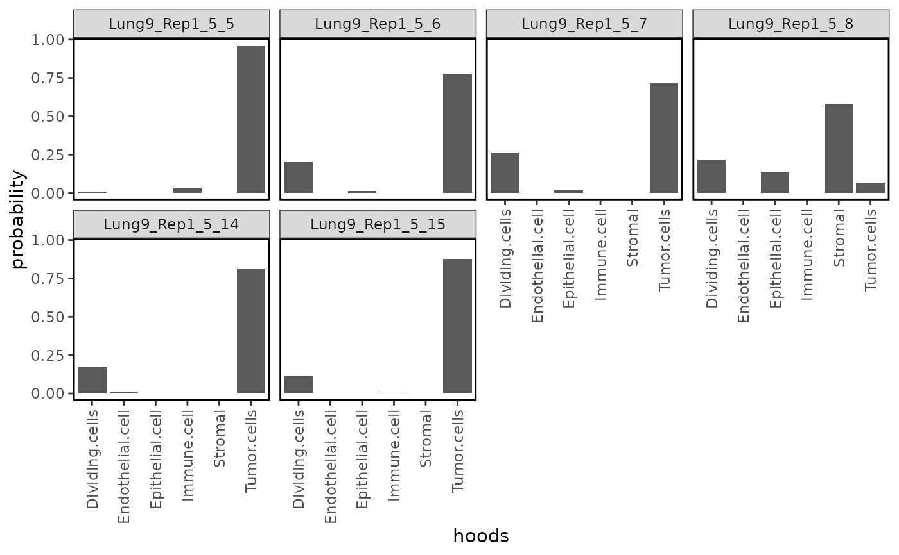

Plot probability distribution
Usage
plotProbDist(object, ...)
# S4 method for class 'matrix'
plotProbDist(object, targetCells = NA, ...)
# S4 method for class 'SpatialExperiment'
plotProbDist(
object,
pm_cols,
targetCells = NA,
by_cluster = FALSE,
show_clusters = as.character(seq(6)),
plot_all = FALSE,
sample_size = 2,
...
)Arguments
- object
A probability matrix or SpatialExperiment.
- ...
aesthetic mappings to pass to
ggplot2::aes_string().- targetCells
Character. Optional. Can speicify one or more cells to be plotted.
- pm_cols
The colnames of probability matrix. This is requires for SpatialExperiment input. Assuming that the probability is stored in the colData.
- by_cluster
Logical. By default is TRUE, to plot distribution by each cluster.
- show_clusters
Character. The cluster to be ploted, by default is 1 to 6.
- plot_all
Logical. By default is FALSE, set this to true to plot box plot instead of bar plot to show all cells in each cluster.
- sample_size
Integer. By default is 2, sampling two cell from each cluster to be plotted.
Examples
data("spe_test")
spe <- readHoodData(spe, anno_col = "celltypes")
fnc <- findNearCells(spe, k = 100)
pm <- scanHoods(fnc$distance)
#> Tau is set to: 22747.4
pm2 <- mergeByGroup(pm, fnc$cells)
spe <- mergeHoodSpe(spe, pm2)
plotProbDist(spe, pm_cols = colnames(pm2))
